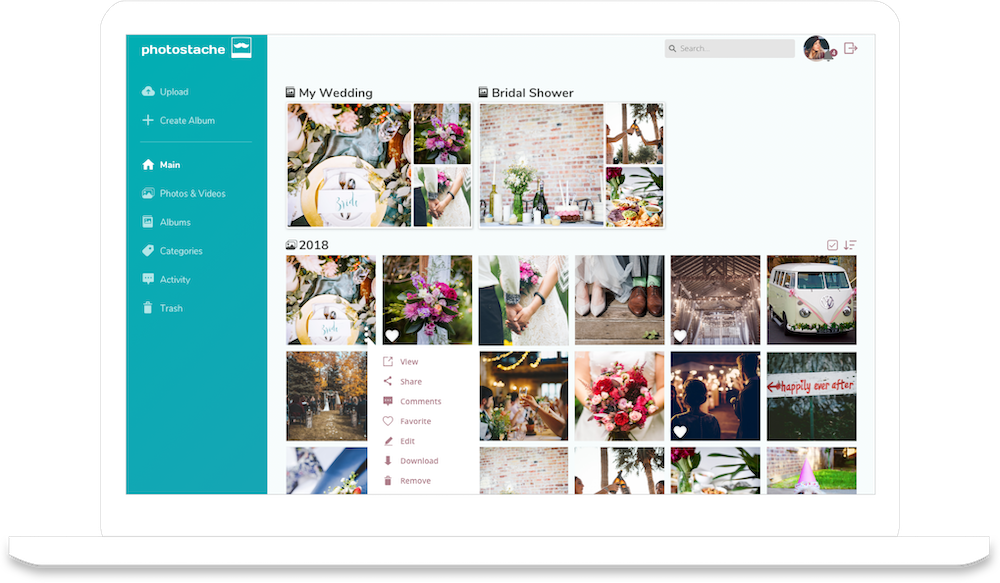
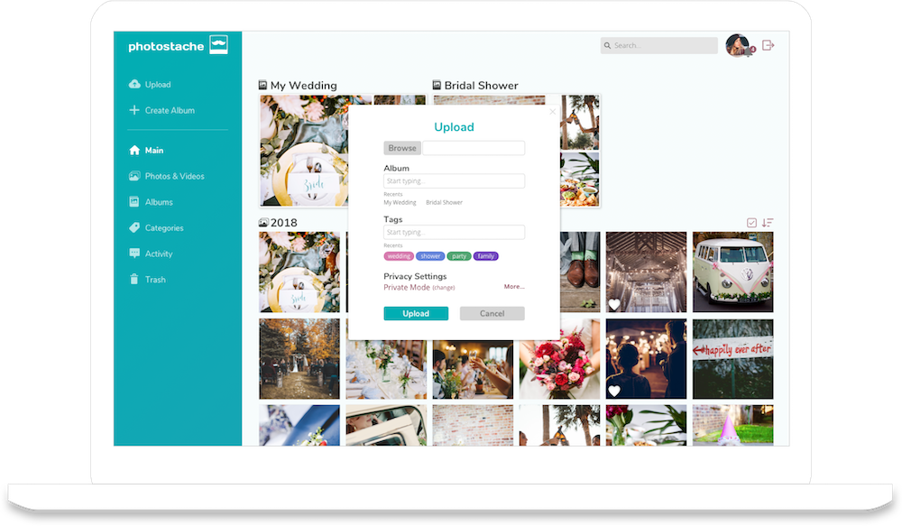

Overview
Problem
Smartphones give everyone the tools to take stunning photos, but they have awakened some concerns as well, such as depletion of storage space, loss of files, and privacy concerns. Currently, there are only a few media storage services that offer a great balance of file sharing and security features.
Solution
To address this problem, we created a fun service that helps the everyday photo-taker store, organize, collaborate, and share their media files from the cloud, while also offering controlled security and privacy.
Research
User Surveys
First, we needed to figure out what type of cloud storage services users use, why they are used, what is lacking, and other helpful info to determine what problem(s) needed to be solved. I deployed a user survey to obtain this data, and found the following findings to be most notable:
- 100% access service on browser
- 100% save documents, spreadsheets and photos
- 79% use cloud storage for personal use
- 54% dissatisfied with organization, security/privacy, or file sharing
These findings told us where the focus should be:
- Organization
- Privacy and Security
- File Sharing and Collaboration
Competitive Analysis
After performing a SWOT analysis on popular cloud storage services like Dropbox and Google Drive, it was clear the market was overflowing with file storage apps, but only a few photo storage apps. I saw an opportunity to create something for our users in this market. Upon analysis, Google Photos, Flickr, and Cluster have uses for certain audiences, but none of them solved the major problems identified in the survey for our target audience.
User Personas
In order to focus on the motivations, goals and frustrations of our potential users, I created two user personas to bring the voice of my users to life. Since they were most concerned about organization, privacy/security, file sharing and collaboration, I made these features important to the personas as well.
“Organizing files is so time-consuming. I wish there was a better way to find my files.”
“I like to backup all my photos on the cloud, but I’m concerned about the lack of privacy.”
Information Architecture
User Stories
With the MVP (minimum viable product) in mind, I listed all tasks a user may want to do when using our product, created user stories and prioritized them based on importance.
The high priority tasks:
- I want to log in
- I want to upload an item
- I want to share an item
- I want to create an album
User Flows
Next, I focused on the most important user tasks along with a few less important tasks to create user flows:
- Creating an account or logging in
- Uploading an item
- Sharing an item
- Creating a folder
- Organizing items
I sketched and created digital user flows that related to the high priority user tasks and a site map to frame the users’ navigation.
Wireframes
I referred to the user stories and flows to sketch and create low fidelity wireframes using the Sketch program. Then I conducted usability testing to ensure easy readability and navigation. The participants were able to complete all tasks successfully. But one participant pointed out consistency issues in the punctuations and complained about the small search bar. I made adjustments based on this feedback.

Branding
Brainstorming...
The first draft of the brand name and logo sketches were for Snaphero, with the concept of the photos, or “snaps”, being rescued by our product. However, the glyphs in the type logo looked too small when rendered digitally. The comic style that I wanted to display for the website design became too complicated to enact as well. This was a problem!
Re-branding...
I went back to the drawing board and came up with alternative logos for Squirrel and Photostache. I shifted the brand to look rustic or hipster to match the names. After all, I do live in hipster city!
The new concept was that users could stash their photos and videos using our service. Through preference testing, Photostache (#5 to be exact) won potential users over due to its obvious meaning and punny humor.
The finished brand...
After more iterations and preference testing, the look of the logo evolved to show a more readible typeface. And now that the branding work was complete, I put together a moodboard and style guide that defined the brand's logo, typefaces, icons and color palette.
Hi-Fi Mockups
Using the wireframes, I incorporated images and the brand styles to create high fidelity mockups. I used preference testing to help determine the best design options.
This time I conducted usability testing on the hi-fi prototype. There was one consistent issue that was raised by all participants. They stated that the icons for the more options menu needed labels because not everyone may be familiar with the icons.
Being close to age 60, one of the participants couldn’t complete some of the tasks because she didn’t know what the icons meant. That was my aha! moment.
As a solution, I added hovering labels to the icons and other minor changes, which lead to the final iteration of the product.
Final Mockups After Testing:
 Mobile Mockups:

Conclusion
What I learned
Looking back, I think perhaps too much time was spent pondering on design decisions when preference tests could’ve been utilized early on. I made many personal assumptions that were proven wrong after listening to my test participants (like when I forgot to show icon labels). This was the one time in my life I enjoyed being proven wrong because it made me improve the design. Also, I learned that encountering problems early in the design phase is necessary and saves so much time and headache down the line.
What I would change
Even though my research data suggested that users like to access their storage mostly on their desktop, I would've liked to spend more time refining the mobile version because I know that accessibilty on multiple devices is very appealing right now. And to stay on brand, I would've loved to make this app more fun and enjoyable for users, like adding quirky descriptions and emojis for friends to react to photos and albums.